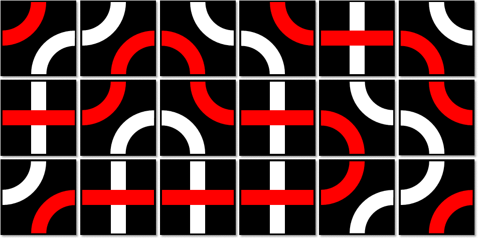

高度化・多様化が進むコンピュータシステムの基盤技術を支える研究者・技術者の育成と交流・研究開発の成果検証を目的に，零和二人ゲームであるTraxを題材とした設計コンテストを開催します．ゲームはルールが明確で評価がしやすく，また，それ自体が興味深いことから，情報処理の例題として盛んに用いられ，探索，データベース，機械学習，専用アーキテクチャなど広い範囲で大きな成果につながっています．
Traxデザインコンペティションでは，FPGA上の専用回路あるいはソフトウェアとして設計したTraxプレーヤを持ち寄って，対戦させて勝敗を競います．システム設計技術・アーキテクチャ技術・リコンフィギャラブル技術・人工知能応用技術やヒューリスティック探索技術および関連技術について，先端の研究開発の成果をアピールする機会となることを目指します．
また，ポスタセッションも同時開催します．ゲームプレーヤの実装やアルゴリズムについて議論しましょう．
本ページは現在準備/検討中の内容を含みますので，ご注意ください．
ルール
Traxは2人で遊ぶゲームです．赤と白の線が描かれたタイルを使ってラインをつなげていきます．先にループを完成させる，あるいはビクトリーラインと呼ばれるラインを完成させた人が勝ちです．
コンペティションでのルール
The 2nd RECONF/CPSY/ARC/GI Trax デザインコンペティションのルールは，ソフトウェア/ハードウェア実装のどちらの場合でもTrax/FPGA JP 基本的なルールに準じます．
対戦方式
- 実装したプレーヤーとサーバーをシリアル通信またはTCP/IPで接続して対戦させます．
- プレーヤは，Trax Notationという表現方法で，サーバーからゲーム情報を受け取り，また，自分の手をサーバーに伝えます．Trax Notationについては，Trax/FPGA JP 基本的なルールの半ほどを参照してください．
- Trax Notationについては，Longest Trax Gamesにある過去の対戦記録も，ご参照ください．
- ターン毎のプレーヤの持ち時間は，サーバーとの通信時間を含めて1秒です．
- 各対戦は先行と後攻を入れ替えて2回ずつ行います．
- 時間の都合により255手で引き分けとします．
ツールキット
コンテストで使用するサーバプログラムをこちらからダウンロードできます．開発用の対戦相手として、乱数を使って手を決定する bot program (trax-player) も配布物に含まれています．ご利用ください．
ドキュメントや更新情報などはオリジナルの配布元を参照してください．
なお，コンテストではRaspberryPi2によるホストシステムを利用する予定です．ホストシステム起動用のSDカードイメージもこちらに用意されていますので，シリアル接続での対戦を予定しているチームは動作を確認の上，対戦に臨んでください．
参加方法とクラス
参加方法
- 一名または複数名によるチームを構成して参加してください．
- チーム毎に，参加登録フォームに，必要事項を入力してください．(参加申し込みフォーム)
- 各チーム，少なくとも一人は，当日の現地での対戦に参加してください．(現地での対戦に参加する方は，このコンペティションへの参加登録に加えてFIT2016 第15回情報科学技術フォーラムに参加登録していただく必要があります．)
参加クラス
対戦は，次の2つのクラスに分けて実施します．
- エンベデッド
- 消費電力10W未満のシステムに実装したプレーヤで競う部門
- 一般
- ノートPC等の消費電力高々100W程度のシステムに実装したプレーヤで競う部門
それぞれのクラスの消費電力以内であれば，PCやGPU，FPGAなどを使って実装して構いません．
重要な日程
- 参加受付期間
- 7月末 予定
- 接続チェック
- 2016年9月6日(火) 予定
- 予選
- 2016年9月7日(水) 9:30〜12:00
- 本選
- 2016年9月7日(水) 13:00〜16:00
表彰
問い会わせ先
質問は，fit2016-trax-q_at_wasamon.netまで，メールでご連絡ください．(_at_は@に置換して，送ってください)
実施組織
- 電子情報通信学会 リコンフィギャラブルシステム研究専門委員会
- 電子情報通信学会 コンピュータシステム研究専門委員会
- 情報処理学会 システム・アーキテクチャ研究会
- 情報処理学会 ゲーム情報学研究会
運営委員
(あいうえお順)
- 天野 英晴 (慶応義塾大学)
- 泉 知論 (立命館大学)
- 大川 猛 (宇都宮大学)
- 長名 保範 (琉球大学)
- 柴田 裕一郎 (長崎大学)
- 保木 邦仁 (電気通信大学)
- 三好 健文 ((株)イーツリーズ・ジャパン)
- 三輪 忍 (電気通信大学)
- 渡邊 実 (静岡大学)
スポンサー企業
スポンサー企業のご支援を募っています．よろしくお願いいたします．詳細は，fit2016-trax-q_at_wasamon.netまで，メールでお問い合わせください．(_at_は@に置換して，送ってください)